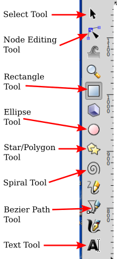
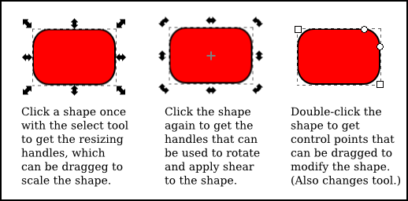
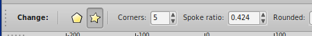
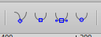
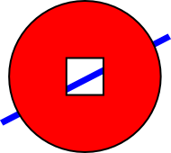
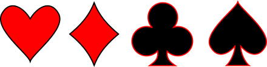
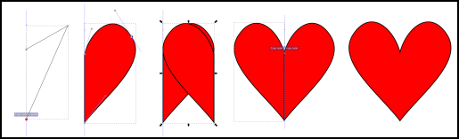

CS 424, Fall 2021:
Inkscape: A 2D "Drawing" Program
This lab is a very brief introduction to the free 2D vector drawing program, Inkscape. Inkscape is available for Windows and Mac OS, as well as for Linux. For more information, see its home site, inkscape.org.
Inkscape uses SVG as its graphics format. SVG, or Scalable Vector Graphics, is discussed in Section 2.7 of our textbook (which we will not cover, but you don't need to know how SVG works in order to use Inkscape). SVG images can be opened in many standard image viewers and can be used on the Web. Inkscape adds some extra data to the svg files that it creates, but that data will be ignored by other programs. Note that to open an svg file with Inkscape on our Linux computers, you have to right-click the file and use "Open With" / "Inkscape".
The version of Inkscape on our lab computers is 0.92. The newest version, 1.1, is available on the Inkscape web site. This lab can be done with either version. The icon images in the illustration below are from Version 1.1, using the "Classic" Theme. (Version 0.92 doesn't have themes, as far as I can tell.)
Assignment
There are three exercises in this lab. To turn in your work, you should submit your files in a folder named inkscape in your homework folder in /classes/cs424/homework. The files should be created using Inkscape's "Save" command. They should have names such as ex1.svg or exercise3.svg. As with the Gimp exercises, the grading will be along the lines of: "Not done" for an F; "Minimal effort and incomplete" for a D; "Minimal effort" for a C; "Everything OK" for a B; or "Excellent" for an A. I will look for your work two weeks after the lab. (There is no Monday lab next week.)
The Interface
You can find Inkscape in the "Graphics" section of the Start menu. Inkscape runs in a single window, with a large central drawing area and several toolbars around the edges. Many dialog boxes, such as the one for setting stroke and fill properties, will open along the right edge of the window. The layout is configurable; my discussion assumes the standard layout.
The drawing area probably shows a scaled-down view. I prefer to work with a full size drawing, so the first thing I usually do is hit the "1" key to get an unscaled view. For detailed work, magnified views are also useful; you can get them using the "View" menu.
The Inkscape toolbar runs along the left edge of the window. The tools that you are most likely to use in this lab are labeled in the illustration. You can also get a description of the tool by hovering your mouse over it. (The same is true for most interface elements.) It's a good idea to learn some of the keyboard equivalents, such as F1 for the select tool.
The drawing tools, for creating shapes, are the Rectangle, Ellipse, Star/Polygon, Spiral, Bezier, and Text tools.
The select tool is only useful after you've drawn some items. Click on an item with the select tool to select it. Select multiple items by dragging a box around them with the select tool. You can also add items to the selection by shift-clicking them. When multiple items are selected, you can manipulate them as a group. For example, you can drag the group to a new position, or you can resize the group as a whole. You can use the "Group" command in the "Object" menu to permanently group the selected items into a compound item; you can break up a compound item using the "Ungroup" command.
When you select an item, or group of items, handles appear around the item. You can drag the handles to transform the selection. There are actually two sets of handles, as well as the possibility of modifying the shape by dragging "control points." For example, using a rectangle:

For a rectangle, the small round control points can be dragged to make rounded corners. The control points also appear when you first draw the shape. To make them go away, you can switch to the Select Tool.
A shape in Inkscape can be stroked and/or filled. There is a dialog box for setting stroke and fill properties, which you can get by right-clicking a shape and selecting "Stroke and Fill" from the popup menu. The dialog box has tabs for setting the stroke and the fill colors. There is also a "Stroke Style" tab, where you can set the stroke width and other attributes. There is a shortcut for setting colors, using the "Color Palette" near the bottom of the window:

A status bar, under the color palette, contains information about the currently selected shape and the currently selected tool. You can learn a lot about how to use Inkscape by paying attention to the help text in this status bar!
Above the drawing area, you can find a tool options bar, whose content changes depending on which tool is selected. In the options for the Select Tool, for example, you'll find some icons for rotating and flipping the current selection, and for moving the selection up or down in the ordering in which the shapes are drawn. Hover your mouse over an icon to find out what it does. Again, paying attention to the options toolbar can help you learn how to use Inkscape! Here is part of the option toolbar for the Star/Polygon tool:

Exercise 1: Use Inkscape to make a drawing containing at least six shapes created using the Star/Polygon tool. Learn how to use the tool by reading the status information at the bottom of the window and by investigating the options toolbar for the Star/Polygon tool. Your shapes should show a wide variety! You should try to demonstrate all the possible options. You should also apply several different fill and stroke styles to the shapes.
Three Complex Shapes
Exercise 2: For the second exercise, you will make an Inkscape drawing that uses several additional features of the program. The drawing should contain the two specific items described below and at least one additional item. You should turn in a single .svg file containing the three items.
One of the items should be "text on a curve." The idea is to make a curve using the Bezier Tool, then make a line of text that follows the curve. The Bezier tool is the most versatile shape tool. It lets you draw both polygonal paths and Bezier curves. I have found it easiest to start with a polygonal path, which you can make by clicking one or more points along the path; then click back on the first point to make a closed curve, or double-click the final point to make an unclosed curve. Inkscape refers to the points that you click as "nodes." For example to make a single straight line segment, click one endpoint, then double-click the second endpoint.
Once you have the polygonal path, switch to the Node Editing Tool (F2) to modify the shape. (You might need to click a shape with that tool, to begin editing it.) With that tool, you can drag the middle of a line segment to make it into a curve. You can also drag the path's nodes. When you click the node at an end of a curved segment, handles will appear, and you can drag the control points at the ends of the handles to adjust the shape. You should note these four button icons in the options toolbar for the Node Editing Tool:

Click one of these buttons while a node is selected to set how the handles for that node work. The left button allows you to freely adjust the two handles separately. This is the default setting. With that setting, you get a sharp point or corner. The second button forces the control points and the node to lie on a line, giving a shape that is smooth at that node. The third button makes an even smoother shape by forcing the two control handles to have the same length.
To make text-on-a-curve, make the curve using the Bezier Tool, and type in the text anywhere in the drawing using the text tool. Then...
After you put the text on the curve, you can still edit the text and the curve separately. When you are happy with the result, select the curve and turn off its stroke color to make it invisible (by shift-clicking the X in the color palette).
The second item that you make should be a shape that consists of a perfect square subtracted from a perfect circle, with the square exactly in the center of the circle. How to get perfect circles instead of ellipses? Read the help text at the bottom of the window while using the ellipse tool! Same for perfect squares. To get the two shapes perfectly aligned, select both shapes and use the "Align and Distribute" command in the "Object" menu. This brings up a very useful dialog box containing a number of buttons that you can use to align and distribute the selected items in various ways. Finally, to subtract one shape from another, select both shapes and use the "Difference" command in the "Path" menu. (Note that the upper shape is subtracted from the lower, which means that you should draw the square after you draw the circle.) Once you have the combined shape, set its fill color. The region between the square and the circle should be filled, as shown in the following picture. I added a blue rectangle in the background so that you can see that there's actually a square hole in the circle, not simply a white square on top of a red circle.

The third item for Exercise 2 is up to you, but it should be something that uses another feature of Inkscape (and is not one of the shapes that are required for Exercises 1 and 3). Maybe try a couple of the items in the "Filter" or "Extensions" menu. One idea: drag a small image from the file system onto your drawing. It will be added as an item in the drawing. Then apply a black outline (the very first filter in the menu) and a drop shadow to the image. Better yet, be creative!
Heart, Diamond, Club, Spade
Exercise 3: For the third and final exercise, you should make heart, diamond, club, and spade shapes, like those found on playing cards:

You should turn in a single .svg file containing the four shapes. Each shape must be a unified, single shape, not just a collection of pieces.
The main problem here is symmetry. For example, the right half of the heart shape is a reflection of the left half. To make my heart, I made the right half, duplicated it to get the left half, and then joined the two halves into a single object. Here are the details...

- When drawing the half-heart, I had to make sure that the two nodes on the left were exactly on the same vertical line, so that later the two halves of the heart would join together properly. For that, I used a "guide." A guide is a vertical or horizontal line that you can use in Inkscape (also in Gimp) to help you position things. To get a vertical guide, press the mouse to the left of the drawing area, in the ruler, and drag to the right onto the drawing area. Once I had the guide, I used the Bezier Tool to draw a triangle, as shown in the first step in the illustration. When drawing near a guide, nodes will "snap" onto the guide. (There is a line of "snap" controls along the right edge of the Inkscape window.)
- In the second step in the illustration, I have used the Node Editing Tool to make two sides of the triangle curved, and I have changed the upper right node to be smooth. I also applied a fill and stroke color to the shape.
- In the third step, now using the Selection Tool, I have duplicated the half-heart (Control-D) and flipped the duplicate horizontally (H-key).
- In the fourth step, I have dragged the left half into position. Again, it snapped into place.
- For the final step, I made the heart into a single shape by selecting both halves and using the "Union" command from the "Path" menu.
A perfectly symmetric diamond shape could be made in a similar way, by making a quarter diamond and duplicating it. Another option is to use a "Page Grid," which you can turn on using a command in the "View" menu. When the grid is shown, the snap feature will snap nodes and control points onto the grid, making it possible to place them exactly in symmetric positions. In this case, I think using guides and duplication is easier.
For the club, I used three circles. (I made one circle and duplicated it to get two more of exactly the same size.) I added a symmetric base, which I made using the grid. Finally, I selected all the pieces and used the "Union" command to join them into a single shape.
Finally, I made the spade out of an upside-down copy of the heart, with an added base.